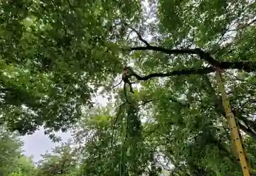

Professional North Texas Tree Care
Welcome to Arborwise™
Greg, Brandon, and the Arborwise team help you understand what is wrong with your trees, what actually needs attention, and how to protect your property without pressure or guesswork.
Nurture Your Nature
Honest answers. Skilled work. Every recommendation has a reason.


Ask Annie
You do not need to know the diagnosis before you call.
Show us what changed, where it changed, and how quickly. The pattern tells us where to look next.
Why Arborwise
A tree company should make you feel more informed—not more pressured.
We look at the whole situation, explain what matters, tell you what can wait, and recommend only the work we can justify.
North Texas Tree Concern Checker
What are you seeing?
Choose the closest match. This is not a diagnosis. It is a better starting point than guessing.
A better first answer starts with three photos
Send the whole tree, the concern, and the trunk base.
Those three views help Arborwise understand the pattern before we arrive.
Professional Tree Care
The work your trees and property actually need.
Every service starts with a reason. Every cut, removal, planting decision, and recommendation should improve the property—not merely fill a work order.

01
Professional Pruning
Structure, clearance, balance, deadwood, health, and long-term growth. No topping and no random branch removal.
Discuss your trees
02
Controlled Tree Removal
Access, rigging, utilities, structures, drop zones, equipment, and cleanup are planned before the first cut.
Discuss a removal
03
Tree Planting & Establishment
The right species, the right location, the correct depth, visible root flare, proper mulch, and a watering plan that gives the tree a real chance.
Plan a new tree
04
HOA & Property Tree Care
Clear scopes, priority planning, resident awareness, documentation, dependable scheduling, and consistent follow-through.
Discuss a propertyPlant Today. Protect Tomorrow.
New neighborhoods deserve trees that will still make sense twenty years from now.
Arborwise plants and establishes trees throughout Anna, Celina, Princeton, and nearby growing North Texas communities. We help homeowners avoid the expensive mistakes that start with the wrong species, the wrong location, or a tree planted too deeply.
Talk with Arborwise about plantingThe Arborwise Way
Do it right, even when it is the hard way.
If something is not working, we do not force it. We rethink the problem, explain the reason, and execute the better plan.
-
1
Look at the whole tree and site
Canopy, trunk, roots, targets, access, soil, weather, and recent changes.
-
2
Explain what we see
Plain language, honest urgency, and no pressure disguised as expertise.
-
3
Give practical options
What needs action, what can wait, and what may not need work at all.
-
4
Work safely and finish clean
Correct cuts, controlled work, property protection, and a clean job site.
Rooted Here. Accountable Here.
Arborwise is part of the communities it serves.
Greg attended Anna High School and now lives in Farmersville. Brandon calls Van Alstyne home. Arborwise belongs to the Farmersville and Van Alstyne Chambers of Commerce and was named a Nextdoor Neighborhood Fave in 2024 and 2025.
These towns are growing quickly. Our job is to serve new neighbors well without forgetting the character, mature trees, and local relationships that made these communities worth calling home.
Start With a Real Conversation
Tell Arborwise what you are seeing.
Send the address, a short description, and any photos you already have. We will help you choose the right next step.
Straight Answers
Useful information before the work starts.
Does a cavity mean my tree has to be removed?
No. Location, sound wood, species, nearby targets, movement, and other signs of decay all matter.
Can I text Arborwise photos?
Yes. Send one photo of the whole tree, one close photo of the concern, and one photo of the trunk base and surrounding ground.
Does Arborwise plant trees in new subdivisions?
Yes. Arborwise plants and establishes trees in Anna, Celina, Princeton, and other North Texas communities, with attention to species selection, mature size, planting depth, root flare, mulch, and watering.
Does Arborwise work with HOAs and property managers?
Yes. Arborwise provides clear scopes, priority planning, dependable communication, and coordinated service for managed properties.